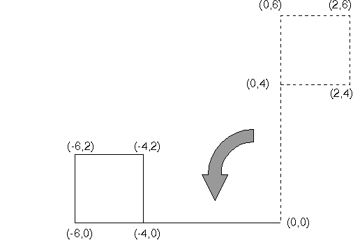

<HTML>
<HEAD>
<META HTTP-EQUIV="CONTENT-TYPE" CONTENT="TEXT/HTML; CHARSET=UTF-8">
<TITLE>Rotating a Graphics Object</TITLE>
<STYLE>
PRE {
  FONT-FAMILY: Consolas, "Lucida Console", "Courier New", Courier, MONOSPACE;
}
</STYLE>
</HEAD>
<BODY>
<H1>Rotating a Graphics Object</H1><!-- entering slot 36 -->
<P>
An application can rotate the flag counterclockwise through 90°, by applying:

<P>
<I>x'</I> =<I> x</I> cos 90 -<I> y</I> sin 90
<P>
<I>y'</I> =<I> x</I> sin 90 +<I> y</I> cos 90
<P>
Because cos 90 = 0 and sin 90 = 1, these equations become:
<P>
<I>x'</I> =<I> - y</I>
<P>
<I>y'</I> =<I> x</I>
<P>
The original five points are transformed: (0,0) ─ (0,0)
<BR>
(0,4) ─ (-4,0)
<BR>
(0,6) ─ (-6,0)
<BR>
(2,4) ─ (-4,2)
<BR>
(2,6) ─ (-6,2)
<BR>

<P>
The following figure shows the effect of rotating the flag 90°.<!-- Unable to decode bitmap format -->
<P>
Rotation Counterclockwise through 90°
<P>

<P>


<P><HR>

<A HREF="034_L3_RotationTransformati.html">[Back: Rotation Transformations]</A> <BR>
<A HREF="036_L4_MATRIXLFStructurefor.html">[Next: MATRIXLF Structure for Rotating]</A> 
</BODY>
</HTML>
